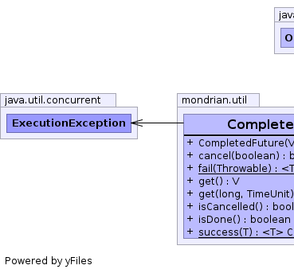
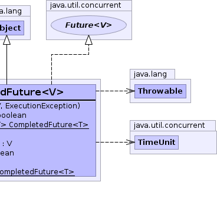

public class CompletedFuture<V> extends Object implements Future<V>
Future that has already completed.|  |  |
| Constructor and Description |
|---|
CompletedFuture(V value,
ExecutionException exception)
Creates a CompletedFuture.
|
| Modifier and Type | Method and Description |
|---|---|
boolean |
cancel(boolean mayInterruptIfRunning) |
static <T> CompletedFuture<T> |
fail(Throwable e)
Creates a completed future indicating failure.
|
V |
get() |
V |
get(long timeout,
TimeUnit unit) |
boolean |
isCancelled() |
boolean |
isDone() |
static <T> CompletedFuture<T> |
success(T t)
Creates a completed future indicating success.
|
public CompletedFuture(V value, ExecutionException exception)
If throwable is not null, the computation is deemed to have
failed. The exception will be thrown (wrapped in a
ExecutionException) when get() or
get(long, java.util.concurrent.TimeUnit) are invoked.
If exception is null, the computation is deemed to have succeeded.
In this case, a null value in value just means that the
computation yielded a null result.
value - Value (may be null)exception - Exception that occurred while computing resultpublic static <T> CompletedFuture<T> success(T t)
t - Result of computationpublic static <T> CompletedFuture<T> fail(Throwable e)
e - Exceptionpublic boolean cancel(boolean mayInterruptIfRunning)
public boolean isCancelled()
isCancelled in interface Future<V>public V get() throws ExecutionException
get in interface Future<V>ExecutionExceptionpublic V get(long timeout, TimeUnit unit) throws ExecutionException
get in interface Future<V>ExecutionException